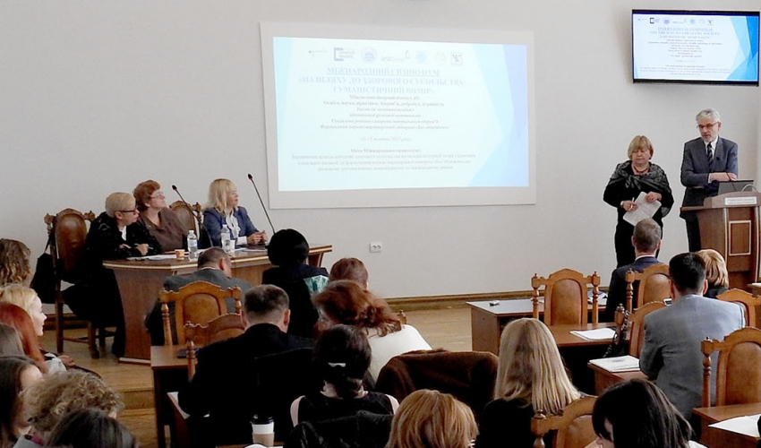

Головна
Новини
Студентам
Програма
Лабораторні
Література
Відгуки
Контакти
Admin
«Гідність – Служіння – Солідарність. На шляху оновлення країни»: в Університеті говорили про визначальні чинники змін

У Львівській політехніці проходить Міжнародний симпозіум «На шляху до здорового суспільства: гуманістичний вимір»
Ректор Львівської політехніки Юрій Бобало: «Ми посідаємо провідні позиції, проте можемо працювати значно краще…»